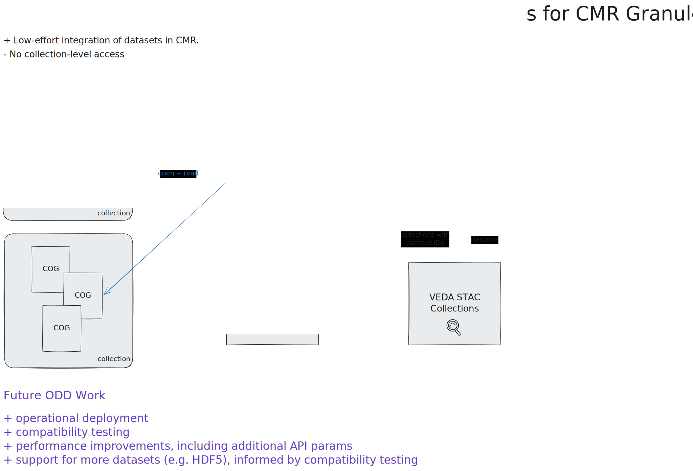
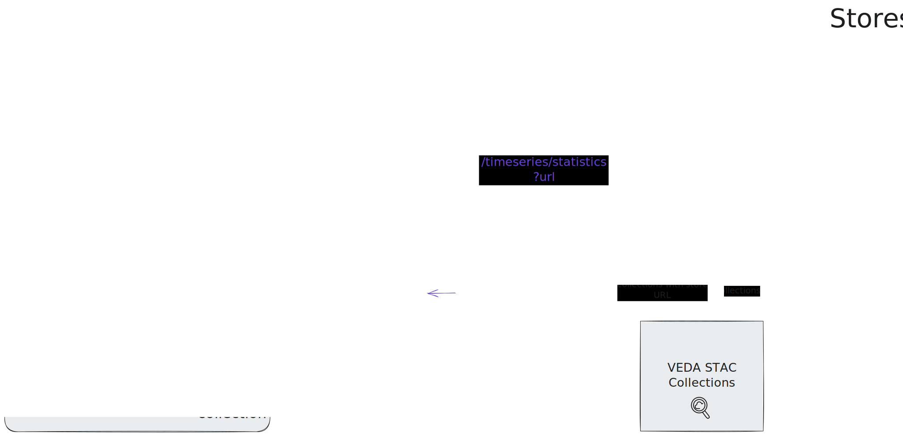

ODD Roadmap
This document provides a roadmap for the VEDA Optimized Data Delivery Team (ODD), broken into 3 categories: (1) services for granules in CMR; (2) services for virtual datacubes; and (3) services for "L2" stores.
The intended audience is VEDA team leads and developers, to help answer questions about what and when datasets will be available via ODD-developed services.
Legend for Roadmaps
✅ Complete
Already delivered
üöß In Progress
Active development
Planned
Scheduled for specific quarter
Future
Planned for future timeline



Roadmap 1: Services for CMR Granules
| Category | Items & Timeline |
|---|---|
| Access | N/A |
| Visualization |
✅ Complete titiler-cmr /tiles API + VEDA UI integration
|
| Timeseries |
✅ Complete titiler-cmr /timeseries/statistics API + VEDA UI integration
|
| Datasets |
✅ Complete Demonstrated with GPM IMERG and TROPESS O3
üöß 26.1 Continue building + using tools to compile a list of compatible datasets
26.2+ Test integration of new datasets as requester-pays is enabled for more buckets. Consider EDL integration as a workaround.
26.2+ Develop support for more datasets, informed by compatibility testing in 26.1.
|
| Operations |
üöß 26.1 Monitoring + Performance evaluation via service tracing (OpenTelemetry)
26.1 MCP Production deployment
26.1 Consolidated benchmarking for advising on zoom levels, AOIs and temporal parameters
|
| Ecosystem Development |
26.2 Share list with NASA product teams for potential integration (i.e. Worldview)
26.2+ Continued documentation to support self-service use of titiler-cmr.
|
Roadmap 2: Services for Virtual Data Cubes
| Category | Items & Timeline |
|---|---|
| Access |
✅ Complete Lazy loading/intelligent subsetting/intelligent access
26.1 Support adoption of Virtual Zarr through library maintenance, improved documentation, and user support
26.2 Support for arbitrary grids (variable chunking)
26.2 Explore virtualization methods for alternate grid structures (i.e., healpix, cubegrid)
|
| Visualization |
26.1 Virtual container (Icechunk) integration in titiler-multidim to support /tiles endpoints
26.1 Identify additional I/O parameters to allow for per-dataset optimizations
26.1 Test VEDA UI integration of /tiles for a virtual dataset (NLDAS)
26.2 Add additional I/O parameters and additional performance improvements (e.g. obstore integration)
|
| Timeseries |
26.1 Develop the timeseries/statistics endpoint in titiler-multidim
26.2 Integrate the timeseries/statistics endpoint into VEDA UI
|
| Datasets |
✅ Complete Prototyped virtual (Icechunk) stores for NLDAS, RASI, HRRR, MUR SST
26.1 Demonstrate publication and tiling of NLDAS virtual store (üíß Water Insight)
26.1 Architecture + documentation for generalizing STAC publication and VEDA UI /tiles integration
26.2 HydroGlobe 5km and 10km virtual stores (üíß Water Insight)
26.2 CarbonTracker-CH₄, EPA Gridded CH₄ Emissions Inventory virtual stores (üè≠ GHGCenter)
26.3 Documentation for STAC publication and VEDA UI /timeseries/statistics integration
26.3 CarbonTracker-CH₄, EPA Gridded CH₄ Emissions Inventory tiles and timeseries integrations (üè≠ GHGCenter)
26.3 TROPESS NOx, TROPESS O3, JPL MOMO Chem, GEOS CF virtual stores, tiles and timeseries integrations (üí® Air Quality)
|
| Operations |
26.2 Monitoring + Performance evaluation via service tracing (OpenTelemetry)
26.3 MCP deployment
|
| Ecosystem Development |
26.1 Create template data ingestion pipeline for virtualizing datasets
26.3+ Moving towards self-service integration
|
Roadmap 3: Services for "L2" Stores
| Category | Items & Timeline |
|---|---|
| Access |
üöß 26.1-26.3 Prototyping creating a query engine using a Zarr provider for data fusion
|
| Visualization |
26.4 or FY 27 Tiling endpoints in near-term, direct client approaches in long-term
|
| Timeseries |
26.4 or FY 27 Timeseries API
|
| Datasets |
26.1 Prototype HLS store
26.3+ Prototype NISAR and/or Opera stores
|
| Operations |
26.4 or FY 27 Operational deployment + documentation
|
| Ecosystem Development |
26.4 or FY 27 Develop ecosystem, moving towards self-service adoption within VEDA and broader community
|